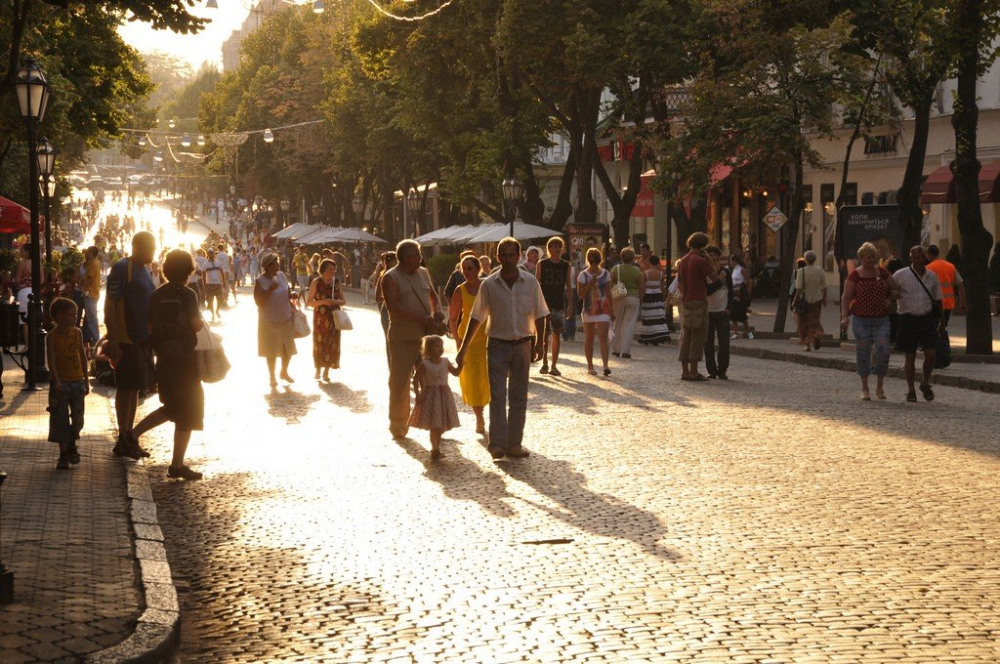
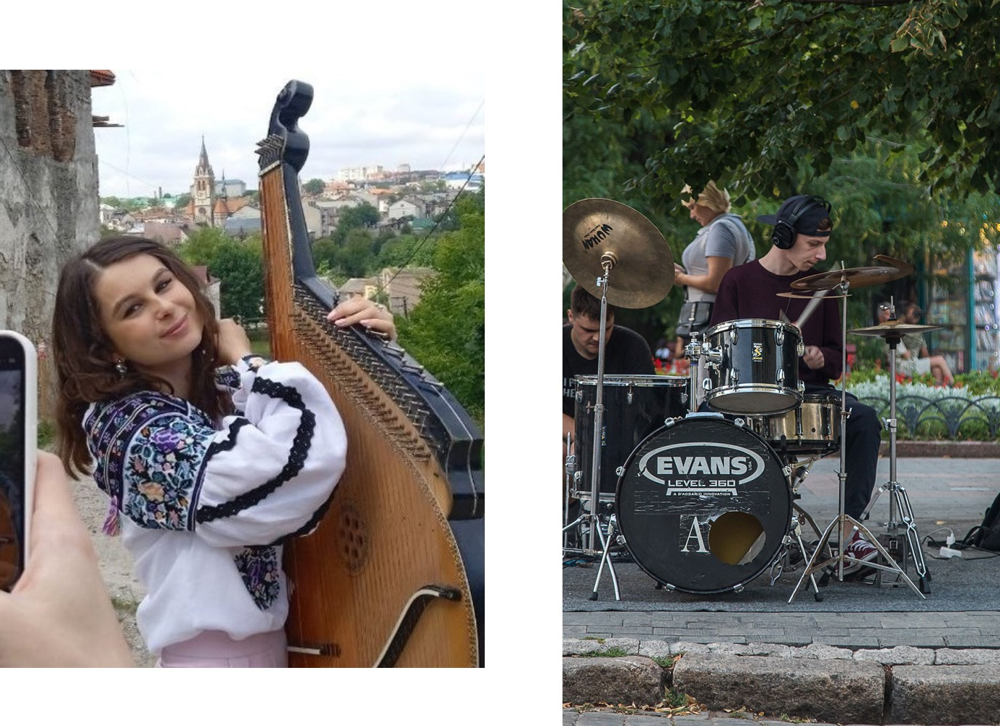
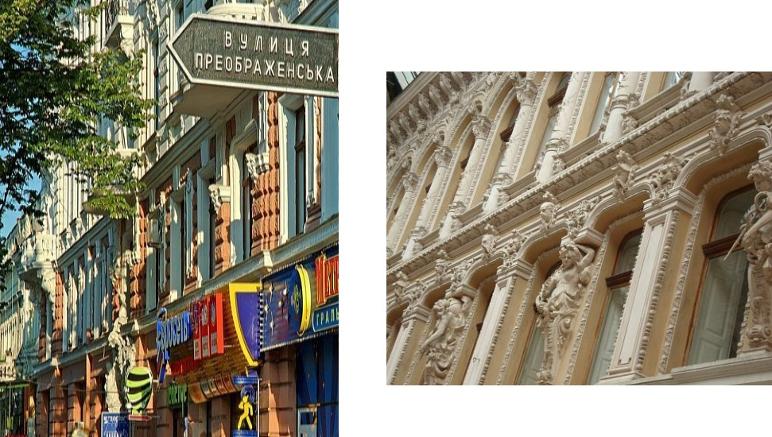
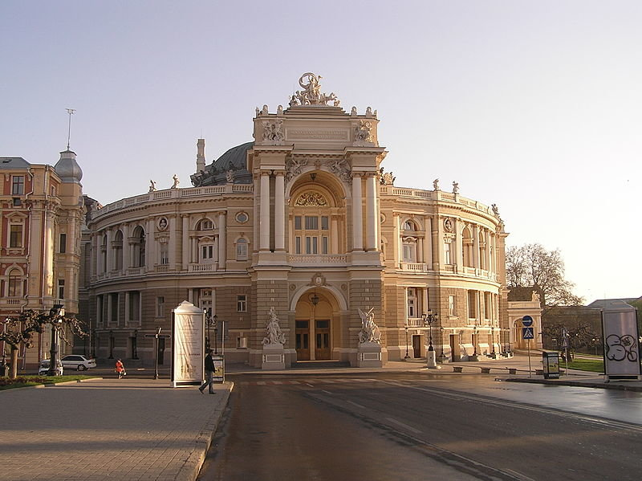
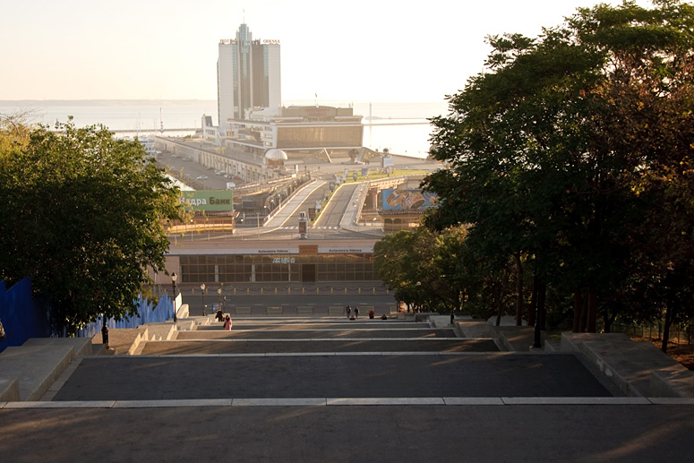

Odessa lies in Ukraine, on the shore of the Balck Sea. It’s home to roughly 1 million people and is the second-largest Ukrainian city.
Nowadays as well as 200 years ago it’s a huge maritime business center with a working seaport and dozens of Marine Universities. By the way, the author of these lines is also studied in one of them.
Let’s take a walk together through the historical center. We start here on pedestrian-only Deribasivska street.
The first thing you’ll notice - is the abundance of life everywhere. It’s full of people during the day and night. Street artists playing on different instruments, you can stumble upon a drummer with a whole set, making beat to the cheering crowd. Or a girl wearing complete authentic Ukrainian outfit with Vishivanka, a traditional shirt, playing pandora.
As we walk further, we are more and more surrounded by the architecture times of the Russian Empire. Here is a little history dive - Odessa was established in 1794 by the Empress Catherine the Great on land conquered from the Ottoman Empire on the site of the Black Sea fortress town of Khadzhibei.
We are passing by tens of colorful cafes that offer so many coffee variations you couldn’t ever imagine, huge restaurants that will be crowded by people later, when the son goes down, popular loud clubs, and night bars waiting for the sunset. We’ll come to them later in the Night section of the site. But now, we are coming to Odessa’s architectural Perl - opera house.
The theater was built over three years (from 1884 to 1887) on the site of the First City Theater, which burned down in 1873. The project cost one and a half million gold rubles. Forbes has included the Odessa Opera in the list of the most significant monuments of Eastern Europe.
During weekends the city center becomes a pedestrian-only area, which is a perfect opportunity to take a walk with your fiance, buy a pair of fancy coffee drinks and enjoy the beautiful Seaview that opens from the Potemkin stairs.
As the sun sets, our walk comes to an end, but the city is only waking up. Today is a Friday and we are going to explore the cheerful Nightlife of Odessa’s authentic bars and surprisingly extraordinary nightclubs.